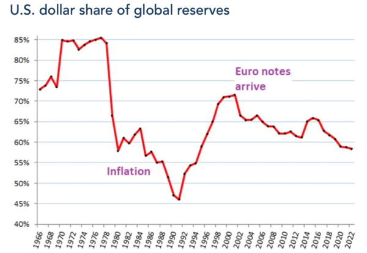
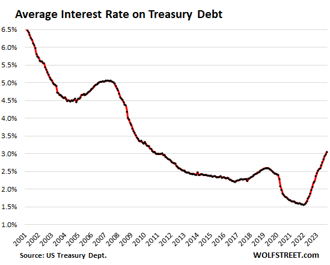
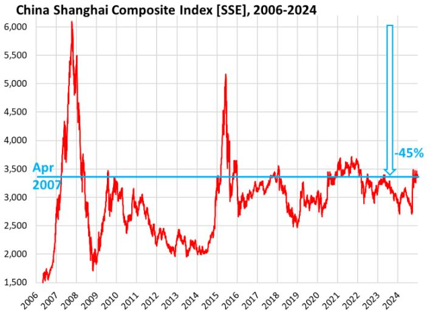
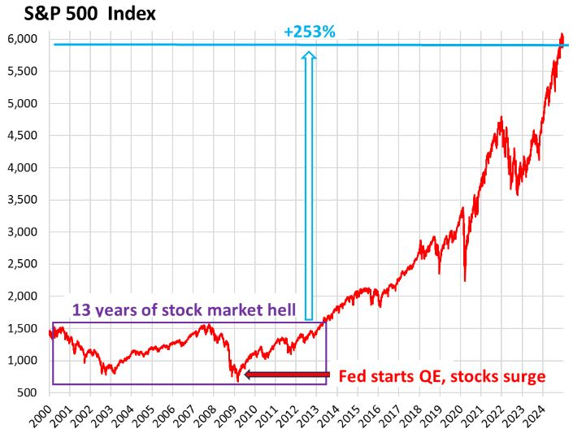
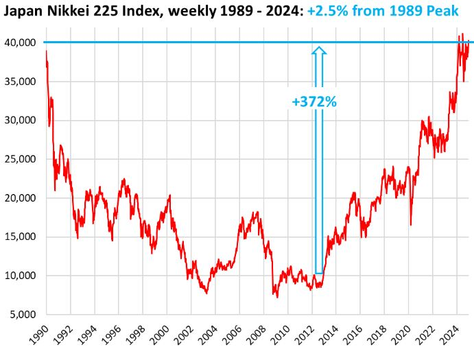
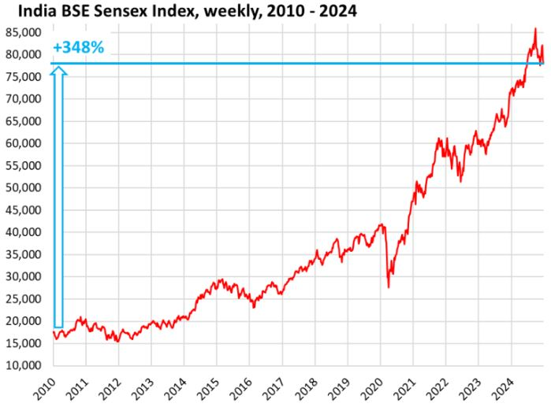
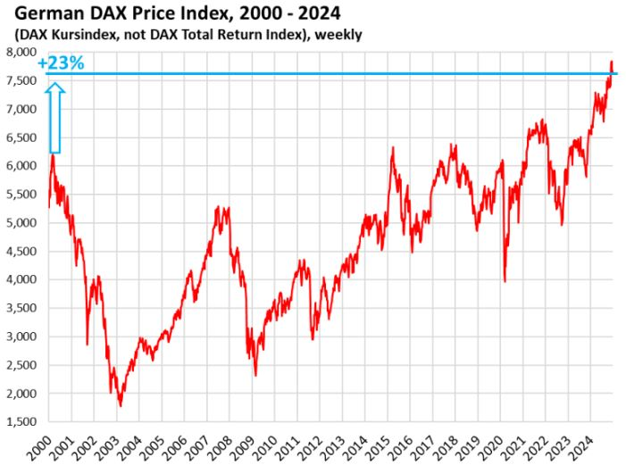

【金融】【戰略】金融史觀（二）當前局勢
2023-11-21 00:02:00
原文网址：https://blog.udn.com/MengyuanWang/180084896
金融史觀下的可見未來
當前的美國經濟在歐盟和中國的無私犧牲奉獻之下，已經成功軟著陸，其GDP成長率在未來兩三年内必然會是已開發國家中的模範生；甚至連底層勞工在忍受了30多年的真實收入零成長之後，也終於獲得實質加薪。然而這個現階段輝煌表象的幕後，卻有著極爲嚴厲的隱憂；簡單地說，美國雖然渡過了兩年前的急性通脹危機，卻依然面臨著無可緩解的慢性通脹壓力。其核心問題，在於引發通脹的諸般沉疴，不但沒有真正解決，反而在加速惡化之中。這些美國金融經濟的隱憂，强大到足以在未來幾年威脅其殖民帝國霸主地位，構成世界歷史的重要轉折，值得我們詳細探討於下：
首先是美方出於金融史觀下地緣戰略考量而硬要强制推動的中美脫鈎。雖然Obama的原版本考慮過本身經濟現實，只企圖將中國產業鏈轉移到其他國家，以避免引發美國内部的通脹，Trump和Biden的兩次加碼升級，卻極其急速粗暴，强行逆轉了1980年代用來根治其國内通脹的全球化外包風潮，完全無視經濟成本和效率。現代美國社會的秩序混亂、效率低下、成本高昂等問題，在盲目複製產業鏈的過程中，造成極大浪費無可避免；而終於開始復蘇的勞工群體維權意識，則必然趁機攫取更多利益分配，進一步推高通脹壓力。
其次是長期利率與財政赤字的交互作用。美聯儲只直接控制短期利率，長期利率雖受量化操作所影響，但仍然必須反映金融市場對未來通脹率的預期。因爲債券交易商對慢性通脹危機的認知在過去一年逐步加深，美國30年國債的等效利率已經從2020年下半的1.52%爬升到當前的5.11%，對應著舊國債的價值跌落53%（假設息票Coupon=2%，則3年前面額100的國債發售價格為110.2，現在購買卻只值52.3，52.3/110.2=47%；零息票債券Zero-coupon bond則更慘，損失65%）。這不但是今年四月硅谷銀行等幾家中型銀行倒閉的原因（根據FDIC統計，四家銀行共承受來自長期債券的損失達3600億美元，所有美國正規銀行總損失大約1萬億），也讓全球中央銀行的外匯儲備承受了數以萬億美元計的隱性損失（Unrealized Loss，無須記錄在會計賬目上），其中當然以占比25%的人民銀行遠遠最爲慘重。
上述美債長期利率的波動，是收割模式D的最新體現。然而美方的收割獲利主要反映在既有債券的低廉利息上，例如當前高達33.7萬億的聯邦國債平均利率只有3%。從今而後的新發國債，利息支出所享有的外國央行隱性補貼將急劇減少。與此同時， 2023財年的赤字已然高達1.7萬億美元，其中佔1萬億的利息支出，因利率上升和國債指數性成長將繼續急速增大，再加上社會保障年金信托基金（Social Security Trust Fund）在6年後預估年損失會由1千億提高為4千億美元，可以簡單推論美國在5-7年後就將面臨每年3萬億以上的結構性赤字，超過GDP的十分之一。這不但不是任何新總統所能緩解，而且必將反饋囘債券市場，從而進一步推高長期利率和通脹率。
第三是美元所占的國際外匯儲備份額，雖曾在2012年成功打壓歐元之後，由61%短暫回升到66%，但從2017年Trump上臺開始，又一路下滑至當前的59%（參見下圖）。2022年俄烏戰爭爆發之後，歐美聯手沒收俄方主權和私有資產，引發第三世界對美元和歐元的高度不信任，必將推動兩者所占份額的進一步降低。其中因爲歐盟自願承受對美國的資本、資源和產業輸送，短期内歐元將負擔大部分損失，但長期來看，國際社會逐步替代美元已成定局。這將180°扭轉本世紀初國際外匯儲備的大幅擴張，對美國國内通脹所帶來的强大分攤舒緩作用，使美聯儲不論選擇量化寬鬆還是緊縮，都必須面臨收穫減小而副作用加劇的尷尬。

這裏最理想的脚本，是反殖民陣營能夠推出一個屬於自己的國際儲備貨幣，從而加速上述對美國財政和經濟的擠壓效應。然而上一次通脹危機醖釀並逐步惡化，自打破Bretton Woods到上圖中1980年美元份額驟降達九年之久，國際主要經濟體才達成替換美元的共識；這一次如果沒有及早協同，那麽從2021年的新冠財政刺激法案引發通脹起算九年間隔，可能也要等到2030年之後，才會出現全面自發的撤離美元浪潮，這顯然賦予美方打擊中國、收割世界的額外時間和機會，不是中方和人類社會的最大利益所在。
短期内的直接應對方案
在美國成功渡過急性通脹危機之後，其不擇手段維護殖民帝國體系的剝削性本質卻也圖窮匕見，新一波反殖民運動引領世界潮流，包含俄烏戰爭、Niger革命、金磚擴員、以巴戰事、以及還將不斷發生的新響應，短期内國際情勢演化方向已成定數，基本不需要中方主動求變，只要維持既有的外交站位和戰略方針，不隨内外噪音起舞，繼續為第三世界反殖民鬥爭的第一綫提供後勤和道義支援即可。換句話説，對美方不排斥交流、不幻想和解、不接受詆毀、不相信承諾，遇有真金白銀的衝突，則固守理想和原則，堅決爭取合理合法前提下的最大利益。
這裏唯一的例外在於前面所提的建立新國際儲備貨幣。美元是金融殖民體系的最重要基石，對其做淘汰替代時卻必須逆經濟自然趨勢（亦即Network Externality網絡外部性，或稱Demand-Side Economies of Scale需求方規模經濟，指主流物品往往物美價廉，難以撼動其市場份額）而行，曠日持久又刻不容緩，所以必須儘早、儘快、主動、積極地推動。
原本去年歐美對俄國所作的經貿制裁和資產侵占激發了國際公憤，奠定了中俄聯手建立新儲備貨幣的基礎，然而雷聲大雨點小，遲遲難產。究其原因，在於中方執行單位所堅持的戰術選擇和專業細節，事先就可以簡單斷言為不合理、不實際、不可行（事實上筆者也的確如此明確預言過），簡直猶如有意怠工、抵制、搞砸（Sabotage）一般。這裏的所謂錯誤戰術選擇，指的是試圖以整個金磚集團爲平臺，賦予每個成員國若干份額，而不是由財務健康的小核心團隊來迅速構建，然後再以金磚作爲宣傳推廣的管道。金磚集團不但人多嘴雜，而且包含了印度、巴西和南非三個雙赤字大國，根本不可能提供新貨幣所需的財政和金融基礎，更別提其中印度在地緣戰略上也居心叵測。
至於專業細節，我們必須先瞭解爲什麽人民幣本身不適合直接替代美元。國際儲備貨幣的主要職能有三：1）國際貿易的媒介；2）大宗貨品的定價；3）外匯儲備的構成。其中前兩項並沒有什麽太大的副作用，但最後一項卻是本文剛剛詳細介紹過，讓美國走上金融殖民帝國這條不歸路的原始誘因。正因爲美元占有了國際外匯儲備的大半份額，又在1971年放棄對黃金的錨定，所以不事生產反而可以獲得更高的利潤，產業虛擬化、空心化和金融化就成爲必然。財政紀律抛諸腦後也依舊有廉價資本市場可供借貸，借貸稍有不順還可以無限印鈔，哪個總理/總統還會擔心赤字和國債的指數成長呢？但這些不勞而獲的好處並不真是憑空而來，它們來自對全世界的間接收割剝削，中國的民族復興能建立在全人類的痛苦之上嗎？此外，美元取代英鎊的過程中，Soros式的金融掠奪還不存在；現在人民幣若是自由兌換，豈不是對國際金融大鰐自我撤防？
所以從貨幣理論的專業角度來看，人民幣必須繼續作爲保護中國實體產業不受外來金融掠奪的防洪堤，絕對不能放任自由兌換和無限流動。那麽應該用來替代美元的，當然正如俄國中央銀行行長Nabiullina在2022年所公開倡導，就只能是一種全新的合成貨幣；並且如同1944年Bretton Woods會議中凱因斯所提議，專門只用於國與國之間的貿易、定價和儲備；而不是人民銀行所提的各式各樣不切實際妄想和藉口，例如數字人民幣等等。中方的金融貨幣主管，該在貿易和定價上多用人民幣的時候，各種拖拖沓沓；上級要求替代美元儲備功能時，就拿出所謂的“人民幣國際化”方案要求“開放金融”，實際上是金融撤防、引狼入室的藉口，以圖利美國金融財團，對替代美元只會有反作用。
【後註一，2023/11/30】正文中提到美國國債的平均利率才剛達到3%，正在繼續上升之中。下圖是這個平均利率的歷史曲綫，可以看出在2008年開始量化寬鬆，美聯儲所針對要操控的，正是長期利率，尤其是國債所負擔的長期利率，很快將其壓到2.5%左右的水平；然後在新冠疫情衝擊下，新一波四倍速的量化寬鬆，進一步把這個利率降到驚人的1.5%。這些放水固然最終通過各種金融管道流入全球經濟體系，由全世界消化買單，但最大、最初始的受惠者，顯然是美國財政部，得以超低利息大幅舉債消費。正文中所預測的，未來幾年國債平均利率達到5%，其實只不過是回歸歷史正常範圍，而且是正常範圍中的低端。届時下圖將會有一個從2008年到2030年的大深谷，對應著美國從其他中央銀行搜刮到的約25萬億美元；這還只是量化寬鬆作爲潮汐式收割的許多手段之一，所得利益中最直接、最立即的部分。

【後註二，2024/02/17】最近三周，留言欄和《龍行天下：全資開放美國投銀，中國歷史性錯誤！》所討論的開放外國金融資本全資持股議題，引動許多噪音，包括有人宣稱這是五六年前的舊事，還有人斷言“銀行”不含投銀。這些無法或不願自行搜索事實的巨嬰言論，在博客都依照規則被立即刪除，但因爲他們又跑到《龍行天下》去散佈謠言，爲了幫助新讀者解惑，在此澄清：引發這個話題的消息，來自國家金融監督管理總局副局長肖遠企於1月25日在國新辦記者會所作的工作匯報，參見《金融监管总局：已取消外资股份比例限制，外资可持有银行保险机构100%的股权》，尤其注意那句“《外商投資准入負面清單》裡關於金融業的相關限制措施目前已完全清零”。
【後註三，2024/02/18】雖然從三年前的博文《我對引入美國投行的一些看法》至今，博客針對開放金融的討論用詞一如既往地追求精確，但我素來不喜歡囉嗦，説的很簡略；現在有越來越多的非專業讀者關注這個議題，不一定具有原先我假設為理所當然的背景知識，所以特地在此澄清一個關鍵論點以避免誤解，也就是我論證出不能開放的並不是所有金融業，而只限於“High Finance”“高等金融”，包括投資銀行、Private Equity、對衝基金、以及定制衍生品（亦即除了最簡單基本、在證券交易所公開常態交易的Futures期貨和Options期權之外的所有金融衍生品）等等超巨額錢上滾錢的機構和花招。事實上不只是不能對外開放，除了最基本的上市股票和發行債券等等直接為企業融資的業務之外，本土的金融機構也不應容許其涉及。至於提供存款服務的Retail Banking零售銀行業（又稱Consumer Banking）、疏通貿易的Commercial Banking商務銀行業、以及同樣直接面對大衆的保險業和Mutual Fund，反倒符合博客所説的“簡單”、“透明”、“從屬於實體經濟”等原則，是值得引進並發展的方向；但也正因它們不涉及搜刮和暴利，美方才意興闌珊，一些舊有的名額都沒有用完，甚至有好幾個進來又退出的案例，例如花旗銀行，參見《Citigroup to Pull Out of Consumer Banking in China》。
【後註四，2024/04/09】正文論證了美國通脹壓力將會長期存在，這一點雖然被美國學術界的“經濟學者”和金融界的“股市專家”矢口否認，普遍强烈要求降息以重啓泡沫，但實權在握的大佬卻有不爲五斗米折腰撒謊的餘裕，偶爾會透露實話，昨天摩根大通CEO Jamie Dimon就是一例（參見《Jamie Dimons Letter to J.P.Morgan Shareholders》）。Powell和Yellen當然也心知肚明；然而正如博客反復提過，美國本身的政治和經濟現實不容許他們對遏制通脹做出實質努力，真正的護欄始終在於歐盟和中國的自願犧牲奉獻。Yellen之所以在2023年以來頻繁來訪，很明顯是爲了確認中方新内閣中的經濟和尤其金融管理階層，能夠繼承前任的意識形態和政策取向，以便維持忠犬祠的持續擴張。
【後註五，2025/01/06】最近中國股市再度成爲新聞話題，我想提醒讀者拿下面幾張圖對照一下，應該可以簡單看清本世紀全球股市漲跌的主要規律，亦即2008年開始的QE量化寬鬆引發“Everything Bubble”“樣樣泡沫”，是美元霸權體系内所有股市全面上漲的基本動力，與經濟基本面毫無相關，以致連工業正在經歷歷史性倒退、整個國家處於慢動作崩塌進程中的德國，其DAX指數也不斷突破新高。被美方强行脫鈎的中國，因而成爲唯一沒有美元熱錢支撐的例外（歐盟至少在美聯儲降息階段可以撿一些剩飯），再加上前幾年易綱安排倒貼了幾萬億的實體經濟資金，然後恆大危機又引發進一步金融資本外逃，餘錢全都倒流給美元體系、股市自然漲不上去；那些拿“國家大事與我小民何干”當口頭禪的人，只是極端無知的傻蛋。





83 条留言
1.IMF的SDR在一定程度上拥有国际储备的职能，那么新的合成货币作为其它国家的储备货币，Triffin dilemma是否没有解决，这只是一种分担痛苦，即几种货币一起承担作为世界储备货币所导致的去工业化等诸问题？
2.倘若美元在未来被合成货币取代，在无锚货币体系下如何约束这些成员国，使其不会重蹈美国剥削其它国的覆辙呢？
3.考虑到这些成员国自身财政状况有可能出现问题，是否应该建立合理的强迫退出以及准入机制？
2.國際協作比一國内政更難推動或改變，是一個把關的力量；但金本位的確更加可靠。
3.當然必須有嚴格的評審機制；我在兩年前那篇《從SWIFT制裁俄國，看中國的對應之道》就預見並解釋過了。
Larry Summers 2015年至今持续讨论碳税和碳息的问题，其指向似乎有意将碳排放权锚定成美元新的备兑支付手段，若这一想法是美国财政精英的共识，它或能提供博客多次批评的“碳交易”金融炒作行为的幕后动机。
提及上述背景，是想请问王先生是否觉得新的国际储备货币的推出，有窗口期的问题。 即是否需要赶在美元找到新的锚定物之前推出新货币，以争取最佳的博弈环境？
中國不再第一線作戰是否可以這樣理解？就是中國看到美國衰敗趨勢已經決定了不想親自下場打仗，留俄羅斯和伊朗在第一線對美做鬥爭，自己完好無損這就是「鷸蚌相爭漁翁得利」中國想當漁翁......
關於高盛設計什麼碳權和碳排放我個人覺得的有可能是高盛等金融業剝削全球設計的新制度掛羊頭賣狗肉，想叫窮國+窮人出錢跟他們買碳權
因為想要環保就必須達到最窮的國家的人民和最富裕的國家的人口有相同碳權，富國出錢跟窮國買碳權而不是相反叫窮國自己承擔，因為有一項統計指出
參見衛報：後50%收入水平民眾只佔碳排放8%，環保義務應該相同嗎？https://www.youtube.com/watch?v=QdDijSWV5Ro
並且一國內窮人和富人根據個人的消費排碳量按比例抽稅，並清算歷史上最早工業化200年的歐美國家的歷史排碳量，我認為這是根本不可能達成的，因此環保只是空談，只是高盛等美國金融業剝削全球的新伎倆，因此無可避免的會導致全球暖化失控，因為這種全球頂層設計的環保制度必然觸及大國和富國的核心利益
碳交易、碳回收和碳補償能讓中國跟著買單固然是白賺，但財團的第一優先是利潤最大化，而大部分的錢往往還是由富國出。例如2022年美國能源業因俄烏戰爭而提高營收5000億美元，其中有3000多億來自北美，剩下大半來自歐洲，只有小部分來自第三世界。美國醫藥界的暴利，也是主要來自對國内消費者的搜刮。
不過只因爲他們也吃虧就指望他們覺醒，那也太天真了。聽説過囚徒困境嗎？即使他們是全知而且理性，也無法擺脫自私的局限，更何況美國這些年開發出來的快樂教育和奶頭樂媒體，正是為了抹殺理性思維。台灣人在殖民利益輸送管道的位置還更低得多，尚且對現狀十分滿足，美國老百姓那樣的智商是不可能集體醒悟的。
美國底層人民為什麼不是美國金融資本和跨國公司三次分配的對象呢？
也就是他們做為美元霸權體系的受益者真正的現金流向可能是如下過程
1.美國的金融業在潮汐掠奪低買高賣全球資源和印鈔產生的收益，以及高科技網路等壟斷性產業的收益，有一部份會被白領階級和高科技產業轉化成高工資和高股利分紅
2.這些白領形同被二次分配會拿這些錢到國內維持高消費拉高他們本地的物價例如進口中國廉價商品和拉高低端服務業工資水平
3.低端服務業的勞工在國內需求增加的情況下被分配到了較高的工資，因為美國本地的白領在賺了華爾街和科技業的錢之後不可能跑去中國消費，但是因為物價上漲而抵銷了一部份又回流到壟斷零售業品牌或中間商手中成為利潤，
雖然進口商品只佔美國GDP很小的比例約15％，但是重要的不是進口佔GDP比例，應該看美國如果要自己生產這種商品會耗費多少勞動力，比如如果美國自己生產廉價商品，那麼3.3億人口當中的1.6億人每天都加班加點10小時當工廠作業員會導致他的成本太高而壓低美國生活水平，因美國控制了產業鏈的高端因而可以用少量工作時間去交換中國相對較多工作時間生產出的商品，例如飛機零組件生產給美國創造了大量高薪工作機會，再去交換中國低端消費品，這個不平等交換的環節就是以少量勞動換大量勞動，雖然從貨幣的價格來看是相等的金額，卻節約了美國本地勞動時間讓他們有高消費水平，這正是美國帝國主義剝削全球勞動力的秘密
還有一個機制就是美國本身的人均土地資源比中國更多，可以靠賣農產品和石油用較少的勞動從國際貿易中交換到更多勞動，這個機制本身就跟產油國或類似澳洲賣鐵礦石一樣
主流經濟學教科書往往認為等量的金額交換到的東西就是平等交換，但它背後所蘊含的勞動力卻不是等價的，例如100萬美元的半導體或專利技術裡面就沒有蘊含太多勞動力，而且如專利只要付出一次努力往往就可以收租30年以上，而品牌溢價基本上是洗腦，同樣質料的皮包在中國生產掛上西方牌子可以賣30多倍價格，沒有什麼技術可言
以上可能我忽略了很多東西，更詳細的過程要從頭到尾一個個觀察微觀的經濟過程然後對宏觀整體做一次統一的思考
這裏真正驚人的有三點：其一是美國剝削所得規模之豐厚，遠超一般人所能想象，參見正文【後注一】。其二是美國人指鹿爲馬、顛倒黑白之無恥，同樣遠超常人所能及；別説對中國的多般無端指責，就連人類史上最大的種族滅絕和資源掠奪，而且還發生在工業化已開始的近代，居然也被描述成文明蓋過野蠻的“建立人間天堂”的過程。其三是受害國家裏，有如許多的崇美者，心甘情願地作爲出賣自己同胞的買辦，而且還能普遍脫穎而出，成爲文化甚至政壇的“精英”。
我覺得以上這三點，一個比一個離譜；百年之後的歷史學家回顧這段時期，必然會瞠目結舌，驚嘆不已。
2019年我已經精確預測通脹即將來臨，完全有足夠時間將資產配重轉移到抵抗通脹的類別，包括農田（例如Bill Gates）、礦產和Utilities（“Alternative Assets”，過去幾年有許多Private Equity和Hedge Funds投入數以萬億美元計的資金）、黃金、或者揩美國殖民地的油（例如Buffett玩的發日圓債炒當地股的游戲）等等，最不濟也可以在利率曲綫即將倒挂之前改用短期債券，總之就是不應該在長期國債上被套牢。
只要美元霸權還在美國手上，不管採取什麼策略都只是減少被吸血的程度，如果美債持有到期帳面上即使按票面價值給付沒有浮虧但還會有通貨膨脹吃持有人的購買力，加上現金流周轉的問題，如突然升息會導致的融資規模縮小很多在寬鬆期間加了槓桿經營的企業倒閉，而且美元的貨幣政策什麼時候寬鬆和緊縮主動權和時機都是掌握在美國手裡，所以什麼時候被剪羊毛很難準確預判，只能從美國國內經濟情況推測可能的時間，而且如果不推翻美元霸權不要期待美國會因負債太高最後財政赤字太大而破產，因為美國債務佔GDP的比例一升高，通貨膨脹實際上卻跑的比美債利息率還高也就是用通脹把債務給稀釋掉，所以實際上是全世界用實質負利率借錢給美國，所以美國國債的實質投資報酬率必然是負的，美國越欠越少錢長期來看負債比不升反降，導致美國長期借錢負債佔GDP比例反而沒有義大利和日本這些國家高，越欠越少的奇葩情況....
舉例來說在3年前川普任期結束疫情剛結束時美國國債佔GDP比例就已經到130，經過拜登繼續擴大舉債，結果因為通貨膨脹美國GDP從2020年的21兆美元膨脹到2022年的25兆美元，這當然不是因為美國實質經濟成長19％，而是通脹造成的數字變大和虛高，但是負債比例反而還因為通脹降了一點，等於之前借錢給美國的都是實質負利率
那麼會不會因為各國看到美元投資報酬率是負的就大家不持有美元？答案是在美元霸權體系下也無法這樣做，否則看壞美元的國家只要升息主動權還在美國手上，美國突然升息殺各國一個回馬槍那麼美元儲備少的國家一樣會死，所以不論進退都是吃虧，只有推翻美元霸權能夠解決這個惡性循環
至於你所引用的這個特例，只要看到“做空”兩個字，就應該知道這是在唬零售客戶，和中央銀行的政策選擇無關。原因有二：1）幾千億的資金運作，而且是官方的錢，根本不可能搞大規模做空。2）利率變動對債券剩餘價值的影響，與其期長（duration或者term）成指數關係；換句話說，對短期債券的價值影響極小。所以做空短期債券，交易成本極高，而獲利極小，先天就不在中央銀行的考慮範圍之内。
我之所以說應該買短期債券，是因爲這次的利率倒挂並不是普通刺破泡沐的Generic Event，而是源自幾十年的通脹壓力一次爆發，所以可以預見倒挂的過程中，是短期利率和長期利率一起上升（而不是長期利率下降；一般刺破泡沫之後會有經濟衰退，引發通縮，從而壓低長期利率），只不過前者先行一步而已。我說在即將倒挂就動手，也考慮了幾千億的資金運作需要很長時間（一年以上），必須預留足夠時間；剛好短期債券的損失在利率上升過程中無關痛癢，而上升之後卻能提供合適的回報，所以是值得考慮的手段。
這裏還有幾個細節值得解釋：第一，判斷通脹時代來臨，比判斷即將倒挂難多了，更別提要提前兩年；畢竟前者是50年一次的例外，後者是經濟周期中的常態；所以遵循我建議的利潤也遠高於一般的利率曲綫買賣運作。這是因爲競爭者少，不但價差大，而且量足。不過這裏靠的，正是超越整個行業的獨特眼光，所以也就不可能在行業内尋得。第二，長期美債流通性並不高，買了之後要賣出很不容易，特別容易套牢；短期債券沒有這個問題，反正賣不出去也可以等它到期。第三，流通性不高的問題，對中央銀行這種動輒几千億的投資客戶尤其重要；一般金融系“學者”以爲反正可以做空或甚至更複雜的Derivatives，其實流通性低還硬要去做交易，就代表著極高的交易成本，使用Derivatives不但不能解決這個問題，事實上Derivatives的發行方會在這些交易成本之上，再加上幾倍的利潤，買家吃虧更大，只不過經過Derivatives的包裝隱藏，會計報表上看不出來罷了。
另一方面，王老师的建议中可以看出能够提早两年判断超级大通胀要来而因此提前做好布局以获利的内功要求非常人所能，这就更加不可能指望他们能有“超越整个行业的独特眼光”了。从社会现实情况的常理来说，如果他们能有这本事，最好的选择应该是自己做hedge fund manager赚大钱，没理由给公家做苦力。这就牵扯到国内的整体氛围和制度内的“奖惩机制”了。从实际结果来推论，很明显人民银行并没有合理的奖惩机制，也就是干得好也不会有什么太大经济上的好处(给腐败创造动机)，干得不好也不会有什么真正损失(给无能创造土壤)。所以我们反腐从来都事后，很少从制度上思考如何提前预防减少，仅仅强调党的思想教育是完全不够也不现实的。这其实是整个官僚体系很大的一个根本问题。阿根廷比索瞬间跌掉一半价值，我想王老师看他们做事应该就像学霸成天看学渣答题一样的感觉。答案直接告诉你，都判断不出来是正确答案要抄。
之前主要讨论收益率，最后我想就流动性请教一下王老师。在《从SWIFT制裁俄国，看中国的对应之道》的评论区里王老师有这么一段描述“人民银行虽然不怕存户挤兑，但美国的敌对态度不断升级，若是台海形势有需要、或者层峰下决心出手反击，这些美元资产必然要在一夜之间换成现金，届时就连名义上的会计账目都无法遮掩。”可见流动性需求也还是很高的，那么像农地、矿产这样的投资标的也并不是好的选项，像巴菲特那种操作我们应该也是难以进行的吧? 另类资产理论上流动性一般也不好，又加上美国各种法规和协定对我们购买各种战略资产的限制，我想求教的是实操上人民银行的投资标的选择是不是其实也是较为有限的? 因为要兼顾收益率和流动性。
再次感谢王老师真诚无私又耐心地传道受业解惑，向世界传播真理和正义，真正功德无量。望先生多保重身体。
當然不能指望高層領導如人民銀行行長能夠自己懂金融達到提早兩年預測50年一次大轉折的地步，但體制内外的專業討論總該注意一下，這也是幕僚、參謀和智庫存在的意義；例如我這十年來寫的文章，並不只在公共論壇上流傳。
那句“一夜之間換成現金”，指的是若臺海開戰，怕被歐美扣押。其實幾萬億美元的央行資產當然必須多元化：有些追求長期保值，有些必須靈活備用；前者可以設法躲開官方，後者沒辦法（除非替代美元），只能盡可能壓低規模。1950、60年代開始，英美金融精英開啓了專藏黑錢的新管道來和老牌瑞士銀行競爭，成長至今的規模完全可以輕鬆容納央行對“Alternative Assets”的需求。如果堅持要直接投資實體資產，挪威、沙特、新加坡等國的國家財富基金也早就開路過了，沒有藉口。
中国金融监管总局宣布，已取消外资参股、收购、增资金融机构的股权比例限制，允许外资持有银行保险机构100%的股权，实现完全控股
王博士对此有何看法？
針對這個議題，我在三年前的《我對引入美國投行的一些看法》一文中，都已經完全說清楚了；中方的金融主管執迷不悟，繼續利用專業壁壘欺瞞最高層，不是我一個人能扭轉改變的。
https://www.ctee.com.tw/news/20240125701809-430801
二、2023.11 轉增持美債
https://money.udn.com/money/story/5603/7726791
三、近年實際上幾乎沒有減少美元資產(國債+機構債+繞道盧森堡持有) https://www.ctee.com.tw/news/20231127700053-439901
中國金融管理機關的中高層執行人員，真的是讓人無語問蒼天了。看來唯有破格拔擢才有機會翻轉了~(前提是池子裡至少還有”非精神美國人”)
關於一，只能寄望退守第二道防線，嚴審或不准相關金融機構推出對金融安定影響較大的商品(例如台灣境內不可承作與台幣有關之NDF商品)；
至於二、三，除了繼續大聲疾呼並傳播真相，好像已經沒招了………………（淚）
十年前剛開始寫博客時，國際上普遍預期中國的名義GDP會在2028年超越美國。我曾經有個私下的野望，在不損害隱性發展品質（貧富不均、金融失衡、環保、教育、風氣等等）的前提下，依舊保持名義GDP的快速提升，滿足2028年的目標。後來美方以中美脫鈎為原則、金融打擊為手段，一趟組合拳下來，原本可以依博客的建議借力打力、趁機超越，前任總理治下的内閣卻不但左支右絀，甚至到了反復自我傷害的地步：先在外交戰略上被“中美夫妻論”耽誤了幾年，然後在貨幣金融上居然一再割肉喂鷹。現在成功遙遙無期，連内部改革也是進一步、退兩步，即使多年後依賴既有的動量繼續上升、外在國力終於明顯超過美國，隱性指標也必然腐朽不堪。這裏區區一個15年前吹出的房地產泡沫，就拖到現在還無法完全解決，反而灰頭土臉；金融全面走上歧路的麻煩更高更廣一層，再加上更隱晦的學術風氣問題仍在急速腐化之中，中國的未來盛世只怕難以長久。這些長期隱性的大毛病病徵初顯卻不儘快解決，等到諸般惡果一並爆發之時已經沒我這代人什麽事，只可惜你們年輕一輩和子子孫孫届時背負大山、無力扭轉乾坤，再怎麽悲哀，也找不到易綱和潘建偉這些始作俑者來算賬，反倒必須眼睜睜看著他們的子孫坐享搜刮的成果，就如同當代美國年輕人對80年代强勢奪權的財閥階級那般。
如果王兄也认可‘除了繼續大聲疾呼並傳播真相，好像已經沒招了’的话。我有一个小小的建议。王兄以后在阐述这个问题时，除了一贯的理性分析，可以去知乎,微博,雪球等软件多搜集一些反对减持美债的高亮言论，再有针对性和攻击性的对其逻辑及话术进行反驳，所达到的传播效果可能会好很多倍。因为比起从事物本质出发，长篇大论地分析，普通网民更喜欢看针锋相对的辩论。尤其是金融相关从业人士，非常懂得利用读者的认知不足，用一套圆滑的话术代替事实和逻辑，蛊惑人心。
(作为王兄微博五年的读者，非常希望能为传播事实和逻辑尽一份力。本人不才没有多少金融和理科知识，只有一些网络文字平台自媒体运营的经验。之前我提的几个金融外交相关的问题，就是根据经验设计的，果然在微博上点赞转发数都很高。希望王兄能采纳我的建议)
最近陈平、卢麒元、马霞他们的人民金融微信群都被限制了。努力的不止王博士您一个人，但资本的力量太大，贝先道都是10万亿级规模的组织，无力与之对抗大概是正常状态。
二、金融政策、科技管理乃至中美夫妻論，也許還可以解釋成是認知問題。但房地產問題，是中央定調多年，卻還是一再延宕而沒能處理好。我對大陸政治的認知只能靠間接觀察，卻始終有個感覺：中方雖然沒有選舉的干擾，但究其實質層面，其實也相當程度受民粹與利益集團的影響，王老師說的內政改革進一步退兩步，恐怕就是利益集團綁架無知(甚或自私?)民眾後，讓政府官員陷入父子騎驢的窘境：欲大刀闊斧改革，但名目GDP一掉，內外唱衰聲紛起，民怨一來，即使有理想的官員(且不說被滲透的)也因壓力而悄然縮手，等更大問題再次爆發，想處理又更傷名目GDP，更綁手綁腳。這種無間輪迴，與美式民主選舉的弊病倒有若干相似，所以，才有上篇留言建議搶佔宣傳高地的想法，我甚至激進的以為，既然現代社會運作是如此複雜，多數大眾無法知悉資本運作真相，在未達改革目的前，撒點小謊並無不可，就好像教育三歲的孩子，偶而說點”白色謊言”。
三、王老師本可悠哉地享受退休生活，甚至也可加入資本集團，協助他們忽悠大眾以發大財，卻因憂國憂民選擇了一條艱難之路，還必須強迫自己做不喜歡、不擅長的事，想必是年幼時深受中國士大夫精神薰陶，才有如此”不理性”的情操，無論結局如何，相信無論過了多少代，總會有人記得，曾經有人傻傻地無償奉獻後半生，只為救民於水火。
PS:
1.中美夫妻論是目前唯一被扭轉的謬誤，但看來也沒有根治，很多精神美國人(包含官員)只是淺水，實際的作為還是在賣國。
2.老師在我上一篇留言欄的回覆提到：…就如同當代美國年輕人對80年代强勢奪權的財閥階級那般。不知此言是否來自於您孩子的感慨，如是，令郎在您的教育下，至少還知道世事真相，許多台灣基層年輕人，對於財閥剝削不僅無知無感，甚至傾慕崇拜為富不仁者，用一句通俗的話來說 : 被人賣了還替人數錢。
2.你説的這個資本通過操弄愚民來鉗制改革、反過來危害公益的效應，我完全同意；這也是博客素來不只是批評民選制，而是連所謂的“群衆智慧”之類的説辭都一概論證否決的原因。是非、善惡、黑白，自有絕對的標準；理解支持者是多是少，向來與對錯無關。
3.我的高祖父曾經是晚清的翰林學士；自己年輕時選擇做物理，原本就類同百年前吳越錢氏那些書香世家子弟投身科學以報國的邏輯。後來看出高能物理是條死路，轉做金融卻發現與國運更爲相關。十年努力，能循歷代先賢前例，教誨國人，庶幾無愧於長輩教養之恩，這輩子已算是過得心安理得了。與中國流行的功利思想相比，這並沒有什麽“不理性”之處，只不過我人生邏輯所優化的效用函數（Utility Function）是以公益爲先罷了。
PS2.是的。我的小孩還算有出息，沒有白費我多年來的諄諄教誨，對美國和世界的權力運作結構瞭然於心，對公益也有足夠的尊重。他在大學裏是Fraternity的幹部，注意到新興的National Conservatives；這些“國家保守派”就是中產偏上的年輕一輩，明白他們被上一代政商精英坑了才組織起來，只不過如何被坑的細節超出他們的理解，因爲課堂上不教、媒體裏不提，結果只能支持Trump之類的民粹候選人。Trump支持者中，受過高等教育的年輕人基本就是這樣來的。
去年有在发改委工作的远方长辈跟我说，顶头上司牵线跟很多美国的跨国集团商讨中国的未来深层经济改革+社会改革路线，其中就包括黑石CEO。得到的意见是首先开放金融业对外资控股的限制。在上峰看来，这些美国公司都是完全可以信任的‘自己人’，以后离不开他们的出谋划策。至于跟美国台面上政客的摩擦，那都是演给民众看的小打小闹。只要跟背后利益集团谈好了，双方自然就偃旗息鼓。至于什么颠覆美国霸权，是幼稚可笑的屁孩思想。
当时我对如此惊悚的说法嗤之以鼻，但这一年多来出台的金融政策竟然完全符合当时的闲聊。现在来看，最有可能导致王兄之前列举的一系列金融政策失误的真正罪魁祸首可能不是工具人易纲，16年后被夺权的李克强，以及刚进国务院屁股还没坐热的李强。而是习最最信任的金融大管家，伴郎何立峰。只有他有足够的信任能在近10年的时间跨度中影响金融政策。此外，也不能排除习完全没有能力对红二代把持的金融领域强力打击的可能，15年左右巴拿马文件中曝光的习家人海外投资就是二代们一次小小的反击，这种子弹他们手里肯定还有很多。
最后引用下某位领导对于雍正的评价，希望历史不要重演。
‘真实的雍正，是一个很有想法的国君，也敢想敢干那种。问题是他本人并没有那种贯彻下去的魄力和毅力，导致他所有的改革都只进行了一半，留下了一堆烂摊子。整个国家折腾的国困民乏，最后“怎么搞成这个样子”郁郁而终’
中国的政策中有非常大的“惠”的成分，惠台、惠港、惠少数群体，惠非洲、惠留学生的惠，以及这里说的惠外国资本等。
总之就是试图妥协退让给好处达成目的。
如果是水平问题，应该是激进和妥协都有，可观察到的几乎都是妥协退让的，因此这里应该有态度问题。
還有，不要說這是什麽將計就計。你連恆大那批人都玩不過，黑石、高盛、摩根大通等等的段數至少再高三四個級別，政治上又不歸你拿捏，與虎謀皮的下場可以100%確定。此事純粹就是以中國和第三世界幾百萬億美元的犧牲，成就極少數幾個新興黃皮富豪的幾百億美元財富，99.99%的利益還是由殖民帝國真正高層拿走。
18楼的消息不完全是危言耸听，主要是1988-1998这一代有非常强的逆向民族主义倾向，从身边接触来看，那一代的思潮非常糟糕，能跟美国财阀共事哪怕当奴才都是非常光荣的差事，他们的后代不是在海外定居就是中层的官僚（现在大概在50岁仿佛），而这一代人的孙辈也极其亲西方。目前中国的中产及以上群体中，存在相当大数量无脑亲西方的群体，这点在俄乌中支持乌克兰以及在巴以中支持以色列体现得尤为明显。他们视亲俄反美的行为是草根才会有的认知。包括您之前提到的胡锡进，最近还在鼓吹中美并非敌人。
关于20楼，金融方面的斗争是肯定会存在的，任何党派在和平时期都不是铁板一块。我们必须承认内部有相当一部分人哪怕到现在还在无脑亲美，鼓吹金融市场化以及金融开放。就像克里米亚危机前的俄罗斯，其内部政经官僚也存在亲西方和亲东方两股思潮，直到被制裁后，才发现俄罗斯无法融入西方。Nabiullina的政策也是因为从上到下遭受到了严重的经济危机才得以顺利推行。现在俄罗斯资产回流也是因为俄罗斯富豪撞了南墙才知道回头。其实张文木教授有一句说得很好’学问要有生死感‘，而国内缺乏危急存亡之感，那么自然充斥着各种蝇营狗苟，靡靡之音。
请先生不要气馁，传播正确的认知相当于给大众播下种子，虽然短时间内看不到成效，但绝对是利在千秋的功德，毕竟从目前中国的发展趋势来看，下一代人的思想观念是要好过上一代人。
我給自己的使命，是推廣實話以追求國家和人類的最高公益，而不是特定政權、行業、黨派、集團或階級的利益。昨天所説的“存疑”，指的是若這些人執迷不悟、賣國求榮，角度或許必須從原本自家人内務爭論調整為對人類公敵的批判，言論空間必然因此被壓縮，但絕不會在原則上做出妥協。
事已至此，想请教王先生：美国政坛和舆论的对华敌视是否能阻止或延缓华尔街资本集团进军中国的进度（例如去年7月底众议院对BlackRock的调查），特别是Trump可能在年底胜选？
五年前的我 : 心中開始存疑，金融巨鱷的利潤是否對全社會有利?是否只是尋租而得?社會總利益並未增加甚至減少?但當時心中僅fifty-fifty，不敢確定。
兩年前的我 : 終於確定，歐美的金融業沒有甚麼高大尚之處，獲利較高只是藉著政治、貨幣、宣傳(更好忽悠消費者)霸權，但坦白說，如果是人民幣取得霸權地位，成為世界主要流通及儲備貨幣，我一度認為是好事一樁。
現在的我 : 完全明白，金融業是越簡單、明白越好，方能促進資源有效合理分配並流向實體產業，真正把餅做大且控制貧富差距，因此，就算人民幣成了國際儲備貨幣，也是短多長空。
(這過程博客提供的論證對我理清最後一段思路幫助極大)
如把中國社會群體分為以下幾個群體(無法一刀切、相互間又有重疊)
一、非金融從業機構人員，但2008~2014這段期間，因過度刺激的錯誤經濟政策而賺到錢的既得利益者。
->除非有良知，否則一定反對改革。
二、對政治、經濟、金融沒有興趣或沒有能力深入探討的一般大眾，主要透過財閥掌握的媒體及”當下”的生活感受獲得”常識”。
->經濟逆風時，肯定被似是而非、有意扭曲真相的財閥名嘴唬弄。
三、相關行業的從業人員 :
->除非具備博主這樣的真知灼見與士大夫精神，否則定會傾向推動人民幣國際化，成了海削一票；敗了未必直接受害(實體產業更慘)，說不定還可轉去外銀當買辦。
補充 : 也看到有些愛國人士(但似無胸懷世界?)主張推動人民幣國際化，但這裡想要提醒的是，縱然贏了對中國短期有好處，但輸美國而被反向搜括的機率趨近100%。從期望值角度看，亦不值得推動。
四、政府官員 :
->一部分如10年前的我，單看金融業的薪水與產值，天真地以為推動”金融開放”可促進GDP有效增長並解決失業問題。
->一部分如5年前的我，但將信將疑，得過且過，明哲保身，不敢出聲。
->一部分如2年前的我，覺得推動人民幣國際化是好事，儘管有風險，值得一拚。(當然裡面亦混有精神美國人，主動想當奴才)
->僅極少數人認清，金融業根本不是甚麼”高端”服務業，而是越簡單、越明白越好，但因為沒有實戰經驗，不容易在第一時間察覺執行層面被扭曲的問題，更遑論進一步知悉 : 拉美元下神壇，走合成貨幣路線，才是可長可久的方案。
以上推論是依剃刀原則及親身的經歷。在有正確認知之人極少，這群人中的多數還又缺乏實戰經驗下，只能說，革命尚未成功，同志仍需繼續努力，距離終點路遙遙，仗還有得打~(只願時間還夠啊)
從美國的觀點，他們或許不在乎前者（亦即中國内政選擇），但能在國際鬥爭（後者）中，扼殺中方的科技、資金和市場的同時，還保持金融宰殺的特權，無疑是做夢都要笑醒的最理想結局。
从过去2-3年的金融改革来看，习本人是希望推动您说的第二种路线，他本人是非常反感金融掠夺以及虚拟化的，多次强调金融应该服务实业，只是一个工具。但我感觉目前高层有这个认识，但没有很清晰地认识到以黑石为代表的犹太财团的掠夺本质，只是当作一般的外国资本，就好像中国长久以来坚持“不干扰他国内政”，只谈生意，不谈意识形态。（我也是反复阅读了博客以后才意识到这些外国资本背后意味着什么）
国内有文革的后遗症，总是担心外资大规模撤出会回到当时封闭的老路。所以从去年开始，中国经济大政策就是强调招商引资，要坚持走全球化的道路，不想主动脱钩，特别是上海。去年上海有外资和外企大规模撤出的问题，还有不少企业高层移民，很多人把失业率高归咎于这个问题，政府非常积极地想要留下外资与所谓顶尖的企业人才（上海市委书记去年一年见了无数的外资高管，频繁开外企高层会议，这是前所未有的），总是想多争取“朋友”和“外资”的支持，避免被全面封锁。
长期阅读您的文章，我了解到目前的经济疲软和失业率问题是在为过去长久以来错误的金融政策买单，而很多顶尖人才的流失是因为糟糕的学术与创新机制管理，良币驱逐劣币。但我认为，很多决策层领导并没有意识到这个问题，而是认真认为中美对抗背景下，要举起全球化的大旗，要争取更多资本的支持（不区分背后的政治力量），要“朋友搞得多多的”。
上峰不懂金融和科技，只能做原则性指示，而利益集团与殖人官员学者沆瀣一气，把卖国谋私阴谋巧妙的嵌入专业词汇和上峰所用原则话语中，即使被否了，再换一套词汇和伪逻辑再骗。此处尝试梳理一些线索（1-6），请指正：
1、李强2023年3月博鳌与外企座谈特意谈到金融开放问题说，盲目开放“最后大家一起死掉”：https://news.ifeng.com/c/8ObLJfDlcE5。相关报道极少，可能被卖国集团控评了。而中央金融委员会中，主任是李强，办公室主任、书记是何立峰，分管日常工作的副主任是前光大集团书记王江，另有两位副手来自财政部和中纪委。王江可能和国内外金融利益集团勾连最深。如何说服李强，或许是其他成员都力推，难以阻挡。
2、前面有人号称听发改委某人说“在上峰看来，这些美国公司都是完全可以信任的自己人”，显然是弱智言论。否则10年前就开放了，何况当时还有李相助力。另外，黑石全球利润最大来源是房地产基金，但在中国业务不大，2021年由黑石要约、高盛参与收购SOHO，被政府阻止。都是上峰完全信任的自己人，区区这点小生意都搞不定？国际资本还远未上达天听，但与金融集团勾连很深。
3、中国学术界实在太腐烂太弱智太殖，即使官员无法直接欺骗上峰，也可由众多专家出面，甚至组织中央政治局集体学习，形成“中央集体共识”乃至圣旨，再挟圣旨进一步打压异己、形成“各界完全一致意见”，上峰也不得不信。
如：2019-2-22十九届中央政治局第13次集体学习-提到“深化金融改革开放”-丝路基金董事长谢多讲解；2020-10-16第24次集体学习-量子科技研究与应用前景-清华大学副校长、中科院院士薛其坤讲解。都写进二十大报告了谁还敢反对？
4、官员和学者极其擅长包装名词和诡辩。以广受追捧的翟东升为例，他提议中央大量发本币国债，一方面置换地方债，另一方面给年轻人发钱提高竞争力，美其名曰“以人民为中心”（八个坚持的核心原则）“民本主义政治经济学”。但显然他不懂国际金融基本规律，也不懂社会，不懂中下层民众行为习惯。（他在经济学上的常识性错误还有很多）。而他在多次演讲中说“一直希望在我的学生里培养一个索罗斯”，“我们经济学创造财富的能力不强，但分配财富的能力很强”，“我们也要在全世界收铸币税”。既蠢又坏的观点，可以被包装成八个坚持，政治正确。同理，金融开放也可被包装成八个坚持。
5、除了卖国集团主动引狼入室，其他人也都惧怕与美国脱钩。科技行业怕芯片断供（毕竟国产产能有限，自给率才23%），其他所有行业都怕丢失golden billion市场，广大民众怕失业率和不景气进一步加剧，国安外交口怕进一步脱钩导致台海出事（如金灿荣）。所有人的逻辑是：当下各种困难是因为中美脱钩，所以如果我们不脱钩，就能好转。此为“民意”，被卖国集团利用，进一步延伸为：他们要在产业脱钩，我们可以在金融、气候等全方面拉拢，这样整体也没有完全脱钩。说白了，90%的中国人都是广义殖人，民意是极端愚蠢的。殖人和无脑红的弱智程度一样。
6、综上所述，此次金融开放，可能是众多官员学者再次用伪理论、伪逻辑诡辩、相关负责人不负责的保证等，并裹挟“民意”，排挤了为数不多的反对声音，骗上峰相信中国监管能力足够强、且符合八个坚持。解决办法：长期还是要彻底革命学术界、智库；短期只能尽可能传播真知。
抱歉我尝试集中发送但不成功，只能分好几条。
不過提醒大家，我們必須遵從Hanlon's Razor:”Never attribute to malice that which is adequately explained by stupidity.“換句話説，即便他們賣國積極到離譜的程度，仍然不能確認其動機為純粹的利益交換，更可能是學術認知被徹底污染的結果；例如兩周前有讀者轉述高官與黑石密切接觸的傳言，即使是真，也必須假設他自以爲在爲國謀略，而不是安排私利。
但如30樓所言，既然認清了現實的困境是來自整整3~4代積累惡果，似乎也不需要太沮喪了，只好繼續想方設法扭轉頹勢、奮戰到底。
二、有一則被刪掉的留言(記憶中留言者是小玫瑰)提到：王老師寫的是，原則上對全體最好的方案(或方向)，至於如何實踐，則是政治人物的問題，要看政治人物的手腕。這裡我想要說，我覺得王老師的文章，儘管沒有太多細節(對於局外人本就做不到)，但絕不僅僅只有原則性的指導，例如<金融史觀>這一系列的文章，以及<從SWIFT制裁俄國，看中國的對應之道>，都明確寫出科技管理、金融操作、教育改革等方面具體可執行的事項，基本已屬於戰術層級而非戰略層級。只可惜，許多同胞不是跪太久站不起來，就是強烈的路徑依賴，還以為委屈就可以求全，就可以回到過去。總之，我認為王老師的建議是“最優解”，可以最快實現民族復興與推翻殖民霸權，無奈現實總是磕磕絆絆，難以盡如人意.....
2.我在節目中提過，如果能下結論，那麽就應該能給出細節；例如“王孟源是錯的”如果成立，那麽就應該很容易指出錯在哪裏。可惜我所見到的，全都是空口做結論的噴子，沒有一個能説出所以然來。博客當然不會複製笨蛋峰居民的典型行爲模式，在闡述戰略優化方向的同時，必然也給出戰術實踐的細節範例，畢竟可行性也是衡量選項的關鍵標準之一。
就政策內容來說，沒有表現出高層對金融在國際鬥爭與歷史發展上的理解（也許是理解了但不明說，但結果仍是造成下層的誤解與曲解），因此闡述中底線思維不清楚，金融主權、抵禦西方金融打擊等等戰略思想並無著重。以先生已經論証無效的金融鯰魚效應來說，即便有效，在戰略高度上也不該採用，就如不可能開放美國駐軍來刺激解放軍提升戰力一樣。這方面的糾錯，心懷公益之士儘速廣泛傳播先生的金融史觀仍然是很重要的一步。假如西方金融病毒入侵已不可逆，只好儘快準備疫苗與特效藥，救一個是一個。
特效藥我是不敢指望了（參見34樓的討論），疫苗必須等2、30年後才可能見效（參見33樓），其間不但國家和人類社會必然承受重大損失，扭轉錯誤的努力也一定比現在直接預防避免要難上好幾個數量級。唉，宰相有權能割地，孤臣無力可回天，果然是歷史常態。
22. 证券公司的外资股比不超过51%，证券投资基金管理公司的外资股比不超过51%。 (2021年取消外资股比限制）
23. 期货公司的外资股比不超过51%。（2021年取消外资股比限制）
24. 寿险公司的外资股比不超过51%。（2021年取消外资股比限制）
而上面的持股比例限制到了2020年版本（2020年6月23日发布；2020年7月23日实施）就已经删除了。
关于银行和保险业限制的变化，主要规定于《国务院关于修改〈中华人民共和国外资保险公司管理条例〉和〈中华人民共和国外资银行管理条例〉的决定》（2019年9月30日发布，2019年9月30日实施）。
我理解1月25日的新闻发布会有关金融业的内容更多地是在讲执行金融放开政策的“成果”。我自己稍微查了中国在证券领域开放的“成果”，一点基本信息如下：
1. 高盛（中国）证券有限责任公司，由高盛集团有限公司于2021年11月11日完成全资控股，前者名下还有北京高华盛泽投资管理有限责任公司。
2. 摩根大通证券（中国）有限公司，由摩根大通国际金融有限公司于2021年8月2日完成全资控股，设立地点位于上海自由贸易区。
另外，新闻显示目前国内共有17家外资参控股证券公司。详见https://business.sohu.com/a/743224436_114984。
建立空殼公司和推動實際業務是兩回事；將准入清單徹底清零似乎發生在去年11月，其目的應該就是爲了鼓勵美國投銀全力投入。
你若願意為喚醒國家做嘗試，當然是正面的努力，卻事先就可以預見有99.99%的機率會無功而返。我自己從十年前決定寫博客來弘揚公益，就是知其不可爲而爲之，能夠也願意付出必需的代價，但我沒有權利要求其他人也這麽做，必須是你的人生價值觀覺得值得自己冒險犧牲。
1. 雪球期权大规模敲入(https://xueqiu.com/1101062281/276815233)。您在八方论谈《石油人民币》那期提到：”如果他们（石油公司）的头脑不是太灵光的话，说不定还会被骗签 Option。“ 我猜测雪球产品的投资人也是这样被券商忽悠，以为指数大幅下跌概率低，产品期收益稳定。结果就是小盘指数快速下跌，雪球在到期前大规模敲入，造成投资人巨额亏损；
2. DMA互换合约大幅回撤。DMA脱胎于AB合约（https://xueqiu.com/6232770106/251048182），也是一个貌似风险中性故而可以加很高的杠杆的产品。但就是小盘指数在节前3天快速反弹，私募基金在股票多头和股指空头端两面打脸，对冲策略完全失效，有的产品直接爆仓。
请问先生，这类奇异期权和互换合约代表的金融衍生品，本质上是否是中小投资人的“屠宰场”？因为看上去低风险，所以加杠杆；因为加杠杆，所以爆仓。只要制造市场的大幅波动，财富就发生定向转移。
对于高等金融的危害性质, 我表示同意. 对于先生说的不可逆, 我持审慎观点. 如果真的回天乏术, 起码要认真将高等金融如何使得当今中国由盛转衰的事记录下来, 保留火种给后来者, 以期待下一代的努力, 一代人自有一代人的使命.
有媒體放消息說中國一部份銀行暫停對俄銀行結算業務 蘇州北京上海部份涉俄業務受影響 美國透過猶太資本與中國金融集團向習近平施壓
中共中央全會即將舉行習近平調整對俄政策，請問王博士這消息是真的嗎？
中國三大銀行停止接受來自俄羅斯的付款
https://www.rbc.ru/business/21/02/2024/65d554ea9a794755d27d8fe4?from=newsfeed
《消息報》：中國三大銀行已停止接受俄羅斯付款
報導中國三大主要銀行：中國工商銀行（ICBC）、中國建設銀行（CCB）和中國銀行已經停止接受來自俄羅斯未受制裁金融機構的支付。這一消息由「Первая Группа」投資公司總裁Alexey Poroshin、公司「Импая Рус」商業總監Alexey Razumovsky以及一位與大型商業聯盟有關的消息人士向《Известия》披露。
這三家銀行在中國的資產規模分別排名第一、第二和第四。與未受制裁的俄羅斯銀行進行的交易目前仍在進行中。
據一位俄羅斯銀行的消息人士表示，ICBC和CCB拒絕接受來自受制裁銀行的所有付款，無論是使用SWIFT、俄羅斯SPFS還是中國CIPS的銀行間轉帳系統。中國銀行解釋這種情況是由公司的內部政策引起的。該消息來源指出，這些限制甚至在2024年年初之前就已經實施。
Poroshin解釋說，中美貿易平衡遠遠超過中俄貿易平衡，因此銀行和國有企業選擇避免風險操作。
進行與中國的支付最為困難，主要是因為西方的SWIFT體系，但使用中國和俄羅斯的類似系統也會出現困難，該公司的合作夥伴兼專家Ilya Ivaninsky指出。他解釋，所有交易終究都會反映在銀行報告中，如果金融機構與歐洲和美國的同行保持聯繫，那麼報告將變得完全透明。
Ivaninsky指出，一些俄羅斯大型銀行在中國設有代表處，這大大方便了支付的進行。例如，俄羅斯國有銀行VTB證實：通過上海分行進行的結算條件並未發生變化——根據當地法律，VTB在上海是一家獨立的中國銀行，可以在兩國的兩種貨幣中進行支付。
此事的正確對應，是大部分金融機構面對歐美，一小部分則專職與第三世界聯通，尤其俄國、伊朗等等衝在反殖民革命前綫的國家。長期則必須將比重向後者傾斜，這是替代美元的配套工程之一。
我是一名台灣社會主義者和左統派，我同意21世紀資本論所論證的結論，除非發生世紀級別的危機或戰爭否則不可能逆轉社會貧富差距因為已經形成利益集團，因此一般解決的方式在形成利益集團之前就在社會制度層面上防止他發生，可事情已經如此，我想問王博士那有沒有可能更好的方法和推動社會主義的方式是物極必反，中國古代有種哲學一但某件事情發展到了極端就可能走向事物的反面這其實是辯證的關係，如果想要逆轉社會貧富差距就好比想要逆轉熵一樣不可能，那麼順著事物的經濟規律和經濟週期來推動一件事情會不會比想要逆天更快達成目標呢？比如說第一次第二世界大戰之前如果沒有戰爭就可能歐洲的貴族社會還會維持個上百年底層人民要還要被剝削上百年之久，是因為資本主義經濟和資本積累的規律以即帝國主義列強之前的衝突導致在衝突各方的制緒崩潰，比如一戰打完之後很多歐洲老貴族死掉了給新資本留下很多擴張空間，加上資產大幅度貶值政權更迭，奧匈帝國、俄國十月革命、德國意志第一帝國、中國甚至是戰勝國英國都發生戰後的大罷工潮原來穩定的政治結構貴族社會和過大的貧富差距也被破壞掉，二戰後又是資本主義的黃金時期，利潤律恢復到超過戰前的水平，二戰後的嬰兒潮產生大量中產階級房價股價都從谷底反彈一直維持到1970年代後這戰後嬰兒潮紅利才結束，如果一戰前的精英早就知道會如此不想失去自己手中權力，會不會反而想要往改良主義方向走也就是讓世界大戰永遠不發生大國坐下來談利益分配，所以一戰前的那種社會秩序又多活了50-100年，底層人民反而失去脫貧的機會又被壓榨100年反而拉長了社會變革的時間呢，如果現在2024年那些貪婪的金融資本家已經形成不可阻擋的利益集團，是否有可能就讓他們貪個夠大開門，且不但不阻止還反其道而行順著人性的貪婪規律去推動駔中反噬他們，原本需要50年時間崩潰現在大幅度縮減到5年就因過度貪婪而崩潰，然後再花4-5年發生大規模戰爭可能比俄烏戰爭更慘烈，人口結構然大幅改變後重新回到二戰後的狀態呢早一點進入下一輪循環而讓這代年輕人少受點苦呢？畢竟時間是不等人的等50年後這代年輕人已經老了沒有希望了失去整整幾代人的未來...........我這只是假設可能太樂觀，我知道存在巨大的風險，還可能產生超過10％的大量人口死亡，但是歷史上所有偉大變革都是大動盪的時代發生的 ，而且讓一半人口永遠處於缺乏社會階級流動性和無產階級的貧困狀態50-100年，難道真的會比戰爭損失更大嗎？理性思考說不定經濟損失還更少，加上戰後新生大量人口、催生新科技產業也能彌補損失，某些中產會掉落到無產的位置，某些聰明無產階級流動到到較上層的位置，既然沒有辦法取消經濟規律和改性那麼加快的他發生更快達到目標？縮短痛苦週期的時間
如果沒有一次大戰就沒有蘇聯甚至不會有中國紅軍和社會主義中國產生，奧匈帝國和土耳其帝國、德意志帝國也不一定會垮
爭一時，才有資格爭千秋。架空清談，毫無實際意義，純粹混肴試聽；警告一次，禁言一個月。
博客對中國政策的觀察評論，一直是非常包容的；這並不來自主觀偏見，而是基於科學謹慎以及我在官僚體系内做過多年主管的經驗和體諒。正因如此，當我開始全力批評的時候，基本已經證據確鑿，而且事態極爲嚴重；金融、教育和科技管理都在此列。
1. 我不认为国家真的在战略上背叛了社会主义，而是在没有意识到上策的情况下选择了惯用的持久战。其中包括选择了见效较慢的人民币国际化、对外资的挽留，以及习近平在美国旧金山企业家晚会上提出的“活力在民间”。这套持久战的框架一旦定下来，那么战术上可能就给了卖国贼们反复小打小闹的空间。金融买办集团应该是将拉拢外资制造业贴上了挽留的“外资”标签并一概而论。上面可能是对几年后与美国分食承包欧日韩经济崩溃后的产业链有一些不太高的期待？毕竟俄乌战争也是吃到了一小部分德国外移产业。
2. 我觉得中国的金融资本阶级长期不可能会有美国那样的破坏力，他们可能会制造各类有形和无形损失，但不可能歪曲中国社会主义的底色。按您所说，中国的千年文化制度传承，以及毛泽东开国的影响实在是太大了，改革开放这一辈人可能是as Anglosaxon as it gets. 王先生可能对大陆的60后精英十分失望，但是大陆90后开始马恩毛阶级理论的影响又重新回归。即使是许多崇拜资本主义，也是少有崇拜英美，多以北欧的资本主义为圭臬。毛泽东时期的社会主义者其实是拿着苏联的教科书，来处理夹杂了反殖民主义和农业国家工业化。许多马克思主义书本上着重处理的资本主义问题在当时的中国并不存在。而90之后在发展阶段上，正好对应的是西欧工业化后出现大批社会主义者的阶段。 我认为在盎撒霸权衰落后，中国的人群主体会有大量诞生类似曾经德国法国的西方马克思主义这样的思潮。虽然不一定会是科学和理性指导，这样主体思潮的中国对资本的容忍最多也就是当今德国法国程度，不太可能成为美国这样“钱袋子”里的国家。
2.你覺得不會有那麽大的破壞力，純粹只是因爲你對現代金融的運作機制和效應不熟悉，所以對其嚴重低估。舉個簡單的例子，美式金融資本帝國在巨觀上依賴美宣、美軍控制世界，用美元來收割，但是在微觀下，腐蝕消化全球經濟和社會靠的是高等金融。高等金融的常用工具是金融衍生品。金融衍生品中有一個名氣很小、相對極不重要的種類叫做Forwards，也就是預付定金、事後交割。它其實是歷史上最早最原始的金融衍生品，幾百年前荷蘭人就大規模試用過了，後來因爲其危害被反復體驗，所以才有標準化、規範化的努力，轉入交易所統一管理，改稱爲Futures期貨。高等金融之中，這麽一個微不足道的小成分，隱藏在中國的房屋預售制度裏，卻正成爲恆大輕鬆詐騙幾千億美元、然後政府處理善後時投鼠忌器的關鍵背景因素，後果嚴重到足以抹殺中國汽車工業强勢崛起的貢獻兩三倍，三四年的總體出口健康成長都不夠挽回經濟活力。你想想其他自由度、隱蔽性、時間跨度、信息不對稱性和杠桿度都遠遠更高的金融衍生品汎濫之後，所能造成的損害根本沒有上限，而中國也沒有國際貨幣霸權來以鄰爲壑。
金融集团怎么蚕食美国的实体经济，以及美国金融学术界的系统性腐化，他还经常到中国讲学。但是很显然，Hudson的努力不会在美国有什么效果。社会的腐化是悄无声息的，到了普通人已经看到问题的时候，挽救已经不太可能了。 5，60年代的美国人绝对不会想到美国今天会变成今天这样，年轻人没有地方上班，付不起房租，买不起房子，看不起医生，可能还背负了一辈子的学生贷款债务，毕竟在他们的年代，只要肯工作，买一个房子安一个家是没有问题的。
中国的管理是自上而下的，下级只需要对上级负责，只要最高层没有对议题有正确认知（或者被幕僚误导），问题是不会解决的。拿中医举例，民间只要稍微接受过科学熏陶的基本都不会同意中医的理论，我所认识的人里面，即使是文科生，同意中医的也不多。然而显然最高层没有理解到中医的危害，他对中医的明确的支持将使去中医这件百年议题再拖一百年，民间的努力是很多的，但是无济于事的。
中国名义上是社会主义，但是如果贫富差距持续悬殊，普通人因背负巨额银行债务无法安居乐业，年轻人疲于奔命，因为工作压力经济压力和其他担忧不愿意生育，那这样的社会主义是不是名存实亡？中国儒家传统是有社会主义基础，但是民间传统也是很爱钱财的，爱做人上人的。
美式的垃圾金融理论对中国知识分子的的腐蚀已经相当严重，作为80后，我所认识的许多清北毕业生，国外留学生和体制内银行从业者对这套理论都是深信不疑的。如果高层不能对此形成正确认知，做出正确的金融决策，那么金融集团对社会的持续破坏是必然的。而且中国传统文化是非常缺乏科学精神的，学术界又如此腐化，很难不让人悲观。
他所討論的即先生提過的人材錯配問題。那時代的經濟產業結構和現在不同，但將「務本」與「逐末」所指替換為實體經濟與虛擬經濟，則論述邏輯完全適用於現在。他提出的解決方法是侈風易俗，從人民的價值觀著手。請問此方法用於現在，是否能成為抵抗金融腐化的一股力量？若說中國古代的抑商思想也是配套治理模式演化出的思想，對現今中國治理來說是否有借鑒之處？
資本自由市場的高效競爭狀態先天就是極不穩定的過渡期現象，必須由監管單位持之以恆地防止其墮落或腐化，否則必然演化成爲金融剝削和寡頭獨占，這一點在金融界本身尤其明顯，偏偏高等金融的複雜性和隱蔽性基本排除了有效監管的可能性，金融創新更加剝奪監管單位學習的空間，所以根本就不應該去搞。
還有，中國内外的網絡環境不同，鏈接往往不能通用，所以必須一並給出標題，方便搜素。
美國的霸權戰略思維是博客的第一個政策建議重點，2017年之後受益於Trump撕破臉而被中方主流接受。理解金融經濟戰是當前中國政略學術界的關鍵要務，我保持審慎樂觀態度。只有科研管理，態勢還很悲觀。
君子可欺之以方。陰招占據信息不對稱的好處，可以跨越若干智商上的差距；然而博客是理性知識分子的避風港，如果時時刻刻想著勾心鬥角，必然有損主要任務。最好的解決方法是我繼續堅持理性邏輯分析，如果有人故意送錯誤信息，而我沒有立刻過濾，那麽大家可以提醒我。
由此可以看出我不是文科生，曾經有文科人物被博客批評之後反唇相譏說“文人相輕”，這類名不副實的標簽我敬謝不敏。
前述愚蠢網民所違反的，正是《讀者須知》第一條的規則，亦即必須先閲讀確定既有真實論點才有資格評論。這裏反映的人性，除了“蠢”之外，還有“懶”，兩者互爲因果，而其所導致的行爲模式，就是博客以前提過的“海鷗式留言”。其實過去連續兩個月，我一直想要在《龍行天下》談充斥當代公共輿論的愚蠢和虛僞（參考博文《爲什麽事實與邏輯對群衆無效》和《大衆媒體的内建矛盾》，以及其他針對臺獨、中醫教和西方僞史論的留言討論），雖因時間所限，無從提及，但這裏剛好有機會，就順便提要説説：蠢話和謊話當然高度重叠，但我們如果以言論是否隱含對本身謬誤的理解為標準，那麽可以把無自知之明的叫做蠢話，表裏不一的稱爲謊言；謊言依精緻程度又分為簡單粗暴的指鹿爲馬、憑空亂編，以及用上技巧散佈烟幕的狡辯術。這些當然都是專注於尋求和傳播真相的博客必須過濾的：其中前面提到的《讀者須知》一文主要爲了排除蠢話和沒有根據的謊言，《常見的狡辯術》一文則討論如何識別狡辯。請注意，前一類更反映人性本能，所以類別豐富、而且犯者衆多；狡辯術反而萬變不離其宗（亦即不是偷換核心話題，就是預先遮掩謊言痕跡）。當然我們不以言取人、不以人廢言，“人”和“言”是兩回事：蠢人可能運用別處學來的謊言，壞人也可能故意說蠢話來與愚蠢群衆做共鳴。公共輿論如此糜爛的風氣因素，正是蠢人和壞人交相賊的影響，例如蠢人說蠢話之前沒有去找原始出處、詳究細節的習慣。壞人憑空撒謊時也就沒有提供原始根據鏈接的負擔。
至於你所擔心的，新國際貨幣的功過問題，不是我在乎的焦點：成功與否，關係的是全人類社會的前途，我個人的居功多少相形之下、毫無意義。你若是回頭仔細讀讀前面我對社科預測競賽榜的自我質疑，也應該看出我不是擔心自身名譽高低，而是專注在能否對學術風氣做出正面貢獻。這並不代表我無視後世的評價，但這裏同樣也是從實利觀點出發：只有對我的理性邏輯敘事有了正確評價，公益最大化才能進一步普及。以過去11年已經屢次扭轉歷史軌跡的成就，博客應該會是未來社會學論文研討的對象之一；我近年的發言，包括《龍行天下》節目，除了繼續政策建言和教育理性受衆之外，也偶爾拿這些後世社會學、歷史學者為假想聽衆，仔細澄清一些細節，包括現在這條回復在内。有極少數幾個學者記錄真相，就已經足夠了，畢竟至今美國（和無數其他國家、包括中國，這一點極爲奇怪）的基礎教育，還在廣汎散佈其建國謊言（參見《美國的開國神話》：例如實際上感恩節來自慶祝屠殺印第安人村落，而不是和平共存；波士頓茶黨是走私商人為阻撓減稅的暴動，而不是對增稅的抗議；“No taxation without representation”是大地主爲了反叛祖國而編造的宣傳口號，實際上英國對美洲殖民地收稅極低，人均只有本土的1/27，沒有任何頭腦正常的人會願意增稅27倍來交換國會議員名額），雖然真相一直被明文記載在所有的歷史系裏。